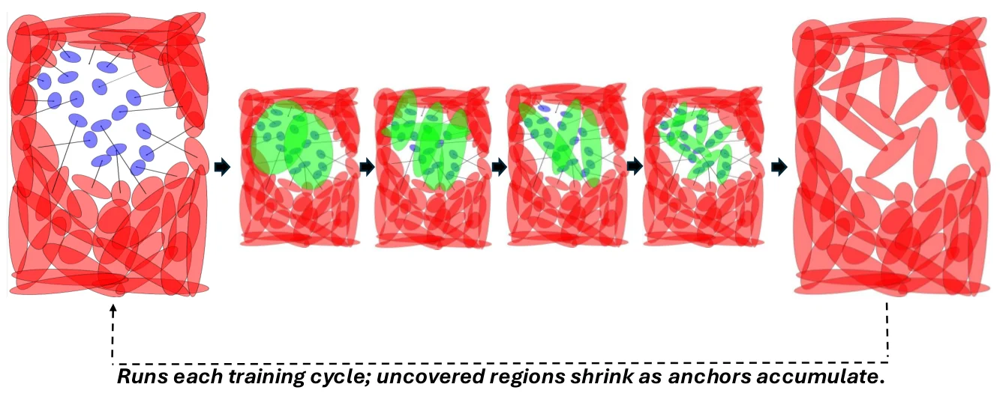
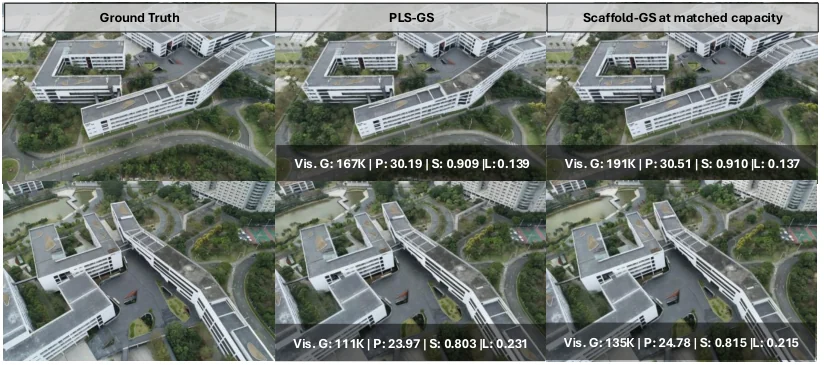
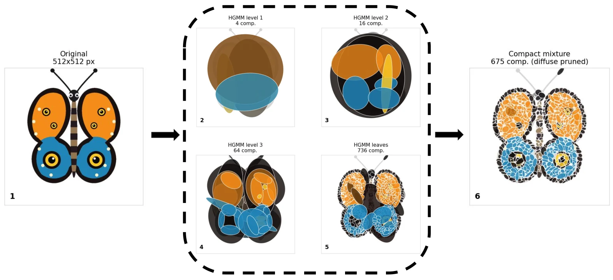
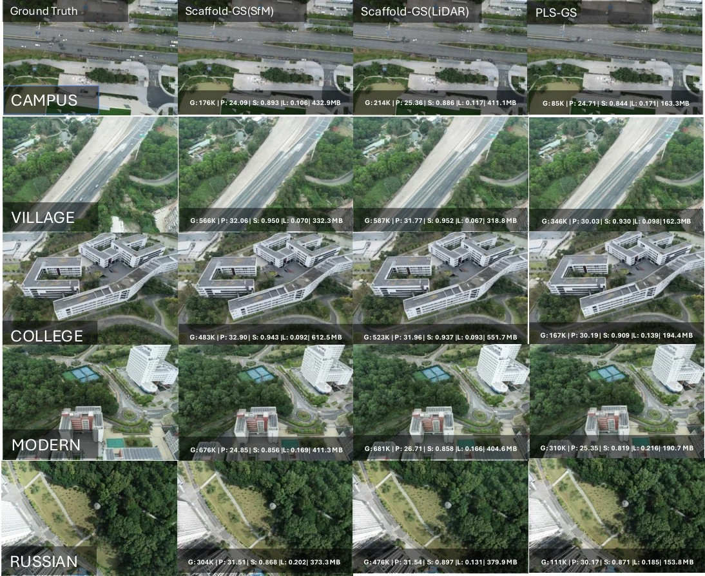

PLS-GS：用概率激光雷达支架构建紧凑、贴表面的高斯溅射
PLS-GS: Probabilistic Lidar Scaffolds for Compact, Surface-Aligned Gaussian Splatting
核心是把“支架”从离散网格换成带协方差的连续概率混合：叶节点即锚点，特征向量即表面帧，Mahalanobis 损失按特征值方向各向异性地限制漂移。五个场景平均 precision 0.484（基线 0.330）、CD 0.703 m（0.820）、anchors 460K（1308K）、size 172.9 MB（413.2 MB）、FPS 190.4（114.0）；PSNR 25.45 对 26.48。等容量时 precision 0.484 对 0.314、CD 0.703 对 1.167 m、PSNR 只差 0.21 dB，说明几何优势来自放置而非容量。
precision
Chamfer
anchors
PSNR gap
作者、单位与技术谱系 · Research context
作者与单位
研究脉络
作者单位与署名来自论文首页；QUT 与 Emesent 的关系是共同署名，不推断雇佣或导师关系。代码与实现依赖均可在原文与仓库中核对。
方法本质拆解 · What actually changed
是不是微调？
不是微调，而是在 Scaffold-GS 官方实现上改结构后从头训练：替换世界坐标偏移为表面帧偏移、加入支撑损失、关闭逐图像外观嵌入，训练 30,000 次迭代。锚点位置与表面帧冻结，只学习每锚点特征、偏移、尺度、颜色与共享 MLP 解码器；新锚点由概率增长阶段加入。
加了什么约束？
位置与颜色联合的 6D HGMM 决定锚点位置与协方差；协方差特征向量给出局部表面帧，把神经高斯的偏移限制在切平面内；Mahalanobis 支撑损失按特征值倒数惩罚法向漂移。LiDAR 骨架不被删除，SfM 只补未覆盖区并通过 χ² 0.99 门控去重。
推理/后端做了什么？
推理就是标准 3DGS 光栅化：锚点解码神经高斯、按深度排序合成，没有测试时优化、没有额外 BA、也没有网格提取。几何评估直接把解码后的高斯均值当点云，与训练时的表面帧约束一致；增长只在训练期发生。
方法本质是什么？
把 LiDAR 测量表面编码成一组带全协方差的连续锚点，让每个锚点的特征向量定义“哪里是切面、哪里是法向”，再用各向异性的二次惩罚把渲染基元压在薄层里；增长只在光度残差大且支架未覆盖处发生，因此容量不随梯度无限膨胀。它没有做的是动态场景、在线增量建图与跨数据集验证。
输入 LiDAR+SfM 彩色点云 → 6D HGMM 叶节点当锚点并给出表面帧 → 表面帧解码 + Mahalanobis 支撑损失 + 有界概率增长 → 锚点少 2.8×、存储 42%、帧率 1.7×，精度 1.47×，PSNR 低约 1 dB。

结论与问题Conclusion & Motivation
核心结论
PLS-GS 的核心判断是：在有测量几何的场景里，3DGS 的支架不该由图像梯度在离散网格上“长”出来，而应由 LiDAR 表面的局部协方差决定。它把彩色点云的位置与颜色一起拟合成分层高斯混合，叶节点的均值就是锚点，协方差特征向量给出局部表面帧；神经高斯在这个帧里解码，再用 Mahalanobis 距离按特征值方向惩罚法向漂移。五个户外场景上，它以 2.8 倍更少的锚点把平均精度从 0.330 提到 0.484、Chamfer 从 0.820 降到 0.703 m，存储降到 42%、帧率升到 1.7 倍。代价是 PSNR 低 1.03–1.65 dB；但等容量对照显示，这部分差距主要来自容量而非放置，几何优势则稳定保留。
动机与问题
纯图像 3DGS 只约束“渲染像不像”，不约束“几何对不对”：高斯基元可以冗余、可以偏离真实表面，存储随场景规模膨胀。已有的两条路线各缺一半——Scaffold-GS 一类方法用体素或八叉树提高紧凑性，但支架是离散的、由图像结构种子生长；LI-GS、GS-SDF 一类方法用 LiDAR 或 SDF 约束几何，却仍保留每个高斯基元独立的位置、协方差、透明度与球谐，稠密化不受测量几何约束。论文要问的是：能否做出一个既紧凑、又贴着测量表面的支架，并让“贴表面”成为渲染时的结构先验，而不是训练后的正则修补。
方法Method
方法总览
输入是彩色点云（LiDAR 为主，SfM 点补 LiDAR 未覆盖区）。先在 6D（位置+颜色）空间递归拟合 HGMM：每个节点用 EM 分成 K=8 个子节点，按分配点数决定是否继续分裂，叶层深度固定为 7，丢弃支撑不足与协方差特征值比超过 20 的分量。每个叶节点实例化一个锚点，位置固定为混合均值，协方差做特征分解 U diag(λ) Uᵀ，前两个特征向量张成切平面、第三个是法向；这些量在训练中冻结。神经高斯的偏移改为在 U 帧内表达，中心为 x_v + U(o ⊙ s)；支撑损失按局部坐标的 δ²/λ 求和，使切向便宜、法向昂贵。训练中若某区域光度残差持续偏高，就对残差大的高斯位置与颜色再拟合一个局部 HGMM，把叶节点作为新锚点，形成有界的概率增长。
关键技术细节
支撑损失写成 L_support = (1/M) Σ Σ_d δ̃²/(λ_d+ε)，与光度损失按 L = L_photo + λ_s L_support 组合，主实验取 λ_s=10⁻³；因为惩罚按特征值倒数缩放，高斯沿切平面可以铺开、沿法向被压回薄层。颜色均值作为 logit 空间的加性基，使初始化时锚点的渲染颜色等于其混合分量颜色。LiDAR 与 SfM 两套混合通过联合位置-颜色统计的 Mahalanobis 门（χ² 0.99）合并，已被 LiDAR 解释的 SfM 分量被删除，但 LiDAR 骨架永不删除。训练 30,000 次迭代，单张 24 GB GPU，k=10、特征维 32、分支因子 8、EM 相对对数似然容差 10⁻⁴（最多 20 次迭代）。几何评估直接从解码后的神经高斯均值取点，不做网格提取，避免把提取算法算进表征分数。

实验Experiments
实验设置
唯一数据集是 GauU-Scene V2：五个大场景，Campus 约 8,000 万 LiDAR 点/670 相机、Village 2,700 万/424、College 5,900 万/1,215、Modern Building 9,400 万/713、Russian Building 2,800 万/563，面积 0.8–1.56 km²；图像长边缩到 800 px，每 8 张留 1 张作测试视图。对照是同一 Scaffold-GS 配置分别用 SfM 点与 LiDAR 点初始化，从而把“换支架”和“换初始化”分开。几何指标为 precision、recall、F-score 与 Chamfer 距离，阈值 τ 取该场景 0.35 m 降采样真值平均最近邻距离的 1.5 倍；另做等容量对照：用 PLS-GS 训练后的锚点初始化 Scaffold-GS 并关闭增长，使两者锚点数量与位置完全一致。
实验数字与比较
五场景平均：PLS-GS precision 0.484、Chamfer 0.703 m、anchors 460K、size 172.9 MB、FPS 190.4，对照 Scaffold-GS(LiDAR) 为 0.330、0.820 m、1308K、413.2 MB、114.4 FPS，Scaffold-GS(SfM) 为 0.312、0.899 m、1368K、432.5 MB、114.0 FPS；PSNR 为 25.45 对 26.48/27.10 dB。换句话说，精度 1.47 倍、锚点少 2.8 倍、存储 42%、帧率 1.7 倍，代价是 1.03–1.65 dB PSNR 与更低的 recall（0.191 对 0.245）。等容量对照（Table 2）里，两者锚点完全相同，PLS-GS 仍把 precision 从 0.314 提到 0.484（1.54 倍）、Chamfer 从 1.167 降到 0.703 m（−40%），而 PSNR 差距缩到 0.21 dB、SSIM 差 0.004、LPIPS 差 0.007，说明主表的召回优势确实是容量带来的。
消融/失败边界
消融把三个机制拆得很干净：只加表面帧旋转、不加支撑损失时，precision 0.225 反而略低于 0.234，因为旋转一个无约束偏移并不改变可达集合；加上 λ_s=10⁻³ 的支撑损失后，同一组锚点的 precision 升到 0.392（2.27 倍）、Chamfer 从 1.471 降到 0.791 m，而且 PSNR/SSIM/LPIPS 还一起变好，说明它同时是光度正则。各向异性初始化只有在支撑损失存在时才有意义：完整方法 0.363/0.880 m，去掉各向异性初始化降到 0.312/1.011 m。概率增长只增加 1.06 倍锚点，而同一支架上的光度增长增加 3.23 倍，模型小 2.56 倍。失败边界也很明确：λ_s=10⁻¹ 时 PSNR 掉到 23.85 dB；只换 LiDAR 初始化而不换支架，precision 仅从 0.312 到 0.330；recall/F-score 随容量增长，不能拿来跨容量比较。
局限与迁移Limitations & Transfer
局限与待核验
作者明确承认渲染质量仍低于无约束光度增长的 Scaffold-GS，并计划用层次结构做更自适应的增长与压缩；他们也说尚未比较 Mahalanobis 支撑损失与标准渲染深度损失，动态/4D 是未来工作。我们还需要核验：GauU-Scene V2 的 LiDAR 与 COLMAP 帧已配准，换到我们自己的手持/车载数据时外参误差会不会破坏表面帧；SfM 补洞区域的锚点没有测量支撑，是否会把误差带进几何指标；precision 提升中有多少来自“高斯均值更贴 LiDAR”这一评估方式本身；以及 172.9 MB 的模型在边缘设备上的实际帧率。论文只给了一个数据集，跨数据集泛化仍是空白。
与你研究路线的关系
这篇直接落在“LiDAR-相机融合建图”的主线上：HGMM 支架可以当作地图中的几何层，颜色只用于分离同一位置的不同材质，正好对应我们关心的路面标线、沥青、冰雪等多物理区域。可迁移模块有三个：用协方差特征向量构造表面帧、用 Mahalanobis 损失做各向异性约束、用“只在支架未覆盖处增长”的有界稠密化控制地图体积。下一步建议在我们自己的户外序列上做 A/B：固定同一个 LiDAR 点云与相机位姿，比较 Scaffold-GS(LiDAR)、PLS-GS 与加深度损失的变体，指标同时报 precision/CD 与 PSNR/FPS，并单独统计 LiDAR 未覆盖区的误差，避免把 SfM 补洞的贡献算进几何优势。





